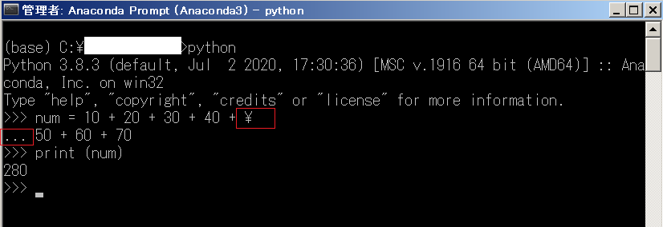
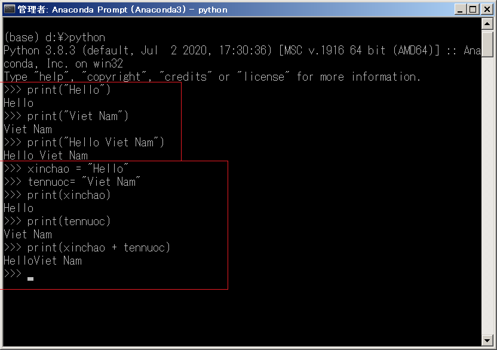

Hướng dẫn cách xuống dòng trong python. Bạn sẽ học được cách xuống dòng bên ngoài câu lệnh python bằng cách sử dụng ký tự xuống dòng trong python, cách xuống dòng bên trong câu lệnh python và viết câu lệnh đó trên nhiều dòng, cách in xuống dòng trong python cũng như cách in không xuống dòng trong python trong bài học này.
Xuống dòng bên ngoài câu lệnh python
Về căn bản, một câu lệnh trong python được viết trên môt dòng và được kết thúc bằng cách sử dụng ký tự xuống dòng được tạo ra khi bạn nhấn phím ENTER.
Đây là điểm này rất khác biệt so với các ngôn ngữ khác như JavaScript vốn có thể tùy ý xuống dòng tạo bởi phím ENTER khi viết câu lệnh.
- Bạn có tham khảo sự khác biệt tại bài viết Xuống dòng trong JavaScript
Khi câu lệnh đã kết thúc và bạn đang ở ngoài câu lệnh, bạn có thể tùy ý xuống dòng bằng cách nhấn phím ENTER khi viết code python cho dễ nhìn. Các khoảng trống này cũng sẽ được bỏ qua khi chương trình được xử lý.
Ví dụ, chúng ta có thể xuống dòng bên ngoài câu lệnh python tùy ý như sau:
str1 = "Hello" |
Kết quả của ví dụ trên cũng giống như cách viết sau:
str1 = "Hello" |
Kết quả
Hello, Việt Nam |
Xuống dòng bên trong câu lệnh python
Bạn không thể xuống dòng bên trong câu lệnh python chỉ bằng cách nhấn ENTER
Ở phần trên chúng ta đã biết, một câu lệnh trong python được viết trên môt dòng và được kết thúc bởi ký tự xuống dòng tạo ra khi bạn nhấn phím ENTER.
Do vậy, trong một câu lệnh quá dài, nếu bạn muốn xuống dòng trong câu lệnh và viết câu lệnh trên nhiều dòng cho dễ nhìn, bạn không thể đơn giản xuống dòng chỉ bằng cách nhấn phím ENTER.
Python sẽ coi câu lệnh đó kết thúc tại vị trí ấn phím ENTER và bỏ qua phần còn lại của câu lệnh, khiến cho câu lệnh bị lỗi khi chạy.
Ví dụ như câu lệnh dưới đây:
num = 10 + 20 + 30 + 40 + 50 + 60 + 70 |
Giả sử bạn muốn xuống dòng ở vị trí sau ký tự 40 +, nếu bạn xuống dòng bằng cách nhấn phím ENTER thì lỗi sẽ xảy ra như sau:
num = 10 + 20 + 30 + 40 + |
Lỗi SyntaxError bị trả về:
File "Main.py", line 1 |
Do đó bạn không thể đơn giản nhấn phím ENTER để xuống dòng giữa chừng câu lệnh trong python.
Sử dụng dấu backslash \ để xuống dòng bên trong câu lệnh python
Để xuống dòng bên trong câu lệnh python và viết câu lệnh trên nhiều dòng, hãy thêm dấu backslash \ vào trước vị trí muốn xuống dòng trong câu lệnh.
Cú pháp viết sẽ như sau:
abc \xyz
Trong đó abc và xyz là các phần của câu lệnh mà bạn muốn viết xuống dòng giữa chừng.
Dấu \ tại vị trí xuống dòng sẽ báo cho python biết bạn muốn xuống dòng bên trong câu lệnh python và viết câu lệnh trên nhiều dòng, do đó python sẽ không kết thúc câu lệnh ở vị trí này mà tiếp tục đọc nối câu lệnh ở các dòng tiếp theo ở phía dưới.
Với ví dụ bị lỗi ở trên, chúng ta cần viết lại nó với dấu \ như sau:
num = 10 + 20 + 30 + 40 + \ |
Hãy thử cách viết này với chế độ tương tác :

Hãy chú ý tới ký tự tiền yên, đây chính là dấu \ được biểu diễn trong windows. Và hãy chú ý tới dấu ba chấm ... , đó là do python sau khi xử lý dấu \ đã nhận định câu lệnh vẫn đang còn tiếp tục, do đó bạn có thể xuống dòng viết câu lệnh ở trên.
Qua ví dụ trên, bạn có thể thấy việc dùng dấu \ đã giúp chúng ta xuống dòng giữa chừng một câu lệnh quá dài để viết tiếp mà nó vẫn chạy được.
In xuống dòng trong python
Trong python, chúng ta sử dụng hàm print để in các ký tự ra màn hình.
Có nhiều cách dùng hàm print, trong đó cú pháp hàm print cơ bản không chỉ định option như sau:
print(line)
line là dòng kết quả bạn muốn in ra màn hình. Bạn có thể chỉ định trực tiếp giá trị của line hoặc gán nó vào một biến và in giá trị của biến đó ra.
Về mặc định sau khi kết thúc một câu lệnh sử dụng hàm print cơ bản, thì kết quả hiển thị ra màn hình sẽ tự động in xuống dòng trong python
Do đó bạn không cần lo lắng dòng kết quả có được in xuống dòng trong python khi sử dụng hàm print cơ bản hay không.
Hãy cùng xem ví dụ cụ thể sau đây:
# chỉ định trực tiếp dòng kết quả muốn in ra màn hình |
Hãy thử cả hai ví dụ trên trong chế độ tương tác của python, bạn có thể thấy chúng đều đưa ra kết quả giống nhau, cũng như các kết quả đều tự động in xuống dòng trong python:
>>> print("Hello") |

In không xuống dòng trong python
Ở phần trên chúng ta đã biết Về mặc định sau khi kết thúc một câu lệnh sử dụng hàm print cơ bản không option, thì kết quả hiển thị ra màn hình sẽ tự động in xuống dòng trong python.
Câu hỏi đặt ra là vậy để in không xuống dòng trong python chúng ta phải làm thế nào?
Cách làm rất đơn giản, chúng ta cần thêm option bằng cách chỉ định thêm tham số endtrong hàm print như sau:
print(line, end='')
Bằng cách thêm tham số end='' vào hàm print như trên, các kết quả sẽ được in không xuống dòng trong python như ví dụ sau:
# in không xuống dòng trong python |
Kết quả in không xuống dòng trong python:
Việt Nam vô địch |
Tổng kết
Trên đây Kiyoshi đã hướng dẫn bạn cách xuống dòng trong python rồi. Để nắm rõ nội dung bài học hơn, bạn hãy thực hành viết lại các ví dụ của ngày hôm nay nhé.
Ngoài xuống dòng trong python thì thụt lề trong python cũng là một kiến thức căn bản bạn cần làm chủ khi bắt đầu học python. Hãy cùng tìm hiểu chi tiết trong bài viết Thụt lề trong python nhé.
HOME>> python cơ bản - lập trình python cho người mới bắt đầu>>03. kiến thức căn bản về chuơng trình python